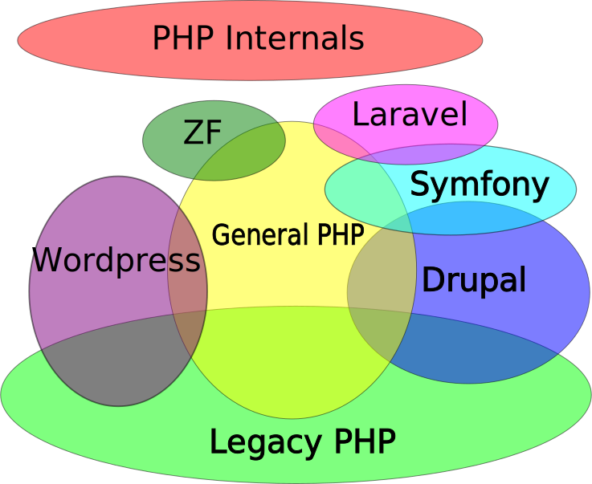

Platform.sh
PHP 2016
A Quick, Informative, Totally Biased summary of the PHP ecosystem in 2016
Presented by Larry Garfield (@Crell)
@Crell

- D.R.I.E.S., Platform.sh
- Drupal 8 Web Services Lead
- Drupal Representative, PHP-FIG
implements Huggable
PHP History
Over-simplified
History
- PHP/FI 1, 2, 1994
- Random hacks by a random hacker
- PHP 3, 1998
- Well it's a backward language but it's a language
- PHP 4, 2000
- The start of actual applications
- PHP 5,
20042007 - A worthwhile language, just took a while
- PHP
65.3, 2009 - The PHP Renaissance
- PHP 7, 2015
- We're living in the future(-ish)!
HHVM, 2010
- Facebook's PHP fork
- HACKlang
- JIT compiled
Credit: Rasmus Lerdorf
Credit: Rasmus Lerdorf

Credit: Rasmus Lerdorf

Credit: Rasmus Lerdorf
The long road to collaboration
- Where do I find code?
- Packagist.org
- How do I get code?
- Composer
- How do I load your code?
- Autloading
- How do I load everyone's code?
PSR-0PSR-4- Name clashes?
- Namespaces
- How can I collaborate on code?
- GitHub
- Can I exchange code?
- PHP-FIG standard interfaces
PHP can always be counted on to do the right thing, after it has exhausted all other options
—Winston Churchill
Pragmatic PHP
PHP developers will take whatever approach gets them to the bar sooner
—Loosely summarized from Eli White and Cal Evans
PHP has an upgrade problem
Supported versions
Source: http://php.net/supported-versions.phpMost current versions of PHP applications require PHP 5.5 or later
(Wordpress requires 5.2+, because they're lame conservative)
Found on servers dead
Source: http://w3techs.com/technologies/details/pl-php/all/allPHP still rules the server
 Source: http://w3techs.com/technologies/overview/programming_language/all
Source: http://w3techs.com/technologies/overview/programming_language/all
(What % of that is small WP sites? Unclear.)
5 July 2007


We've decided that we will all be first.
The PHP Communityies
Current status: Learning to get along
PHP is consistently inconsistent
- Every system has its own way of handling environment credentials
- Drupal, Laravel, WP have own hosting ecosystems
- Use of VMs/Containers very inconsistent
- Production standards vary
- Composer-for-production still developing field
- Production MUST differ from dev (xdebug, composer)
And it likes it that way!
PHP code is mostly centralized
- http://Packagist.org
- Almost everything, default
- http://repo.magento.com
- Magento packages, requires auth
- https://packagist.drupal-composer.org/
- Temporary Drupal front-end
- https://packages.drupal.org/[7|8]
- Alpha Drupal front-end (different versions)
Composer is local, not system-level
PHP is compiled
...for production
Not for dev
http://www.garfieldtech.com/blog/composer-distribution-mental-model
What to expect
Warning: Rampant speculation follows
- Persistent daemons
- Long-running processes
- event loop extensions (libev)
- Non-CGI PHP
Larry Garfield
Director of Runtimes and Integrations Platform.sh
Continuous Deployment Cloud Hosting
Stalk us at @PlatformSH